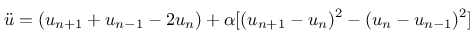
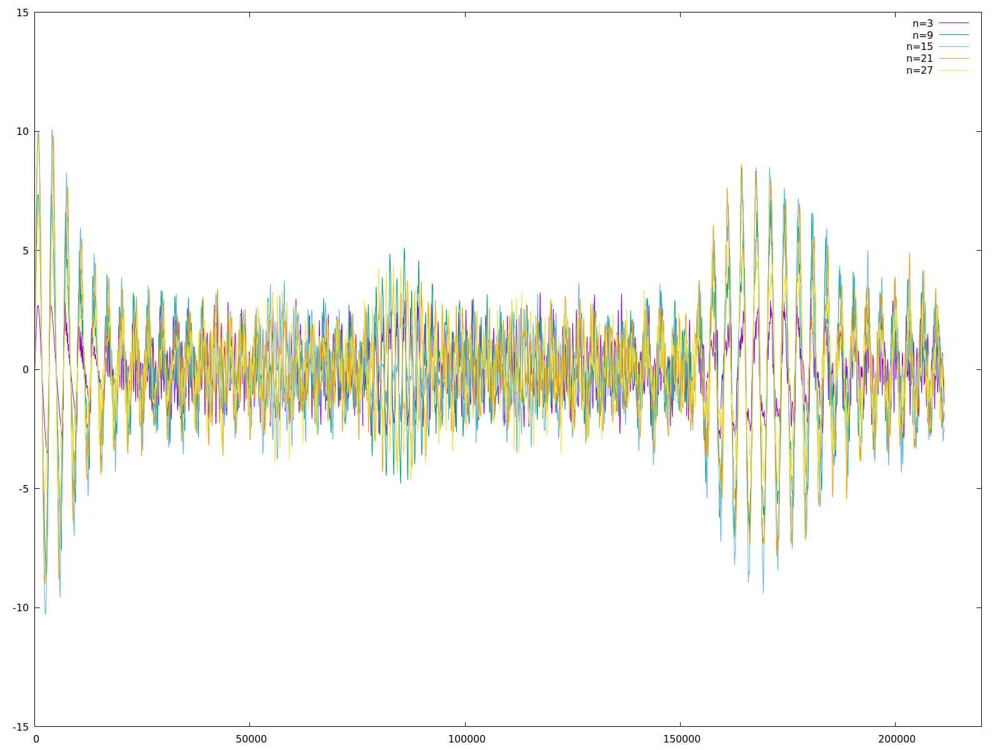
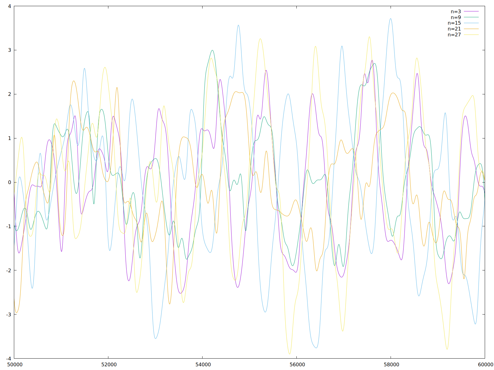
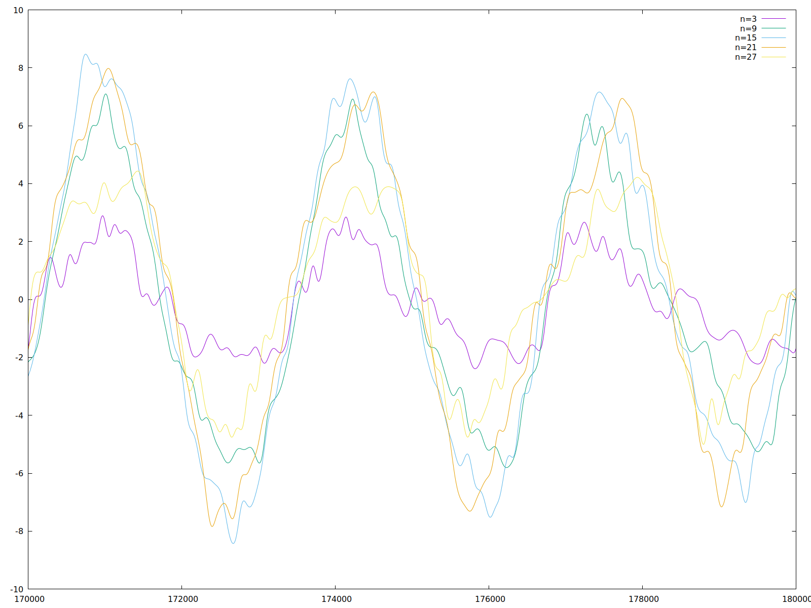
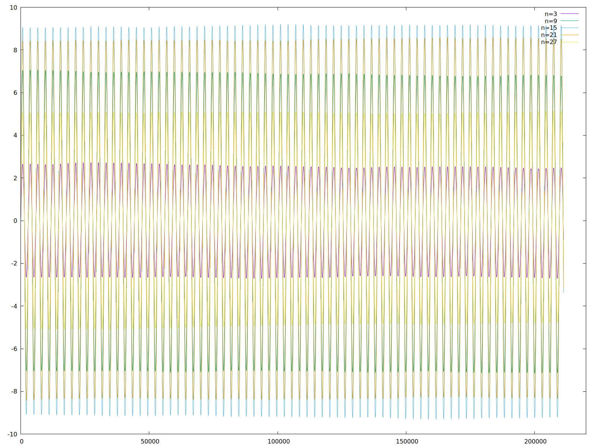

Updates
Nachdem ich nun schon längere Zeit nichts mehr über Chaos und nichtlineare Systeme geschrieben habe, habe ich meinen Urlaub dazu genutzt, mich des Fermi-Pasta-Ulam–Tsingou-Experiments anzunehmen. Hier meine Ergebnisse...
Dieses Experiment gilt als eines der ersten Computerexperimente. Es erwies sich, dass das erwartete Verhalten vom simulierten Ergebnis deutlich abwich: Das Experiment simulierte n nichtlinear gekoppelte Schwinger. Die Erwartung war, dass das System in endlicher Zeit thermalisiert - das bedeutet, dass alle Schwingungsmoden gleich angeregt werden und die bestimmende Frequenz sich abschwächen sollte.
Was allerdings beobachtet wurde war, dass nach einer bestimmten Zeit ein quasi-periodisches Verhalten in der Simulation beobachtbar war. Diese Beobachtung wurde zunächst auf Fehler in der Berechnung zurückgeführt. Nachdem dies ausgeschlossen war, wurden verschiedene Lösungsansätze überprüft. Das Experiment trieb das damals noch recht neue Feld der Erforschung nichtlinearer Systeme stark an (Stichwort Chaos, Ergodizität), gilt heute jedoch weitestgehend als verstanden.
Das ursprüngliche Experiment stellte ein eindimensionales Experiment dar, im zwei- und dreidimensionalen Fall beginnt die Untersuchung solcher Systeme gerade - unter anderem wegen der enormen Herausforderungen bei der numerischen Behandlung.
Meine Versuche, das Experiment nachzustellen unternahm ich mit n=32 gekoppelten Nodes und quadratischer Nichtlinearität:

Ich habe hier zunächst den zeitlichen Verlauf des Zustandes von 5 ausgewählten Nodes über den gesamten Verlauf der Simulation dargestellt. Die initiale Anregung des Systems war eine Hälfte einer Sinusschwingung: die Nodes links und rechts hatten initial den Zustand 0.0 angenommen, Node 15 und 16 simultan den Zustand 1.0.

{kind=link}
Man sieht hier deutlich, dass anfangs alle Nodes phasengleich zu schwingen scheinen - damit ist die initiale Mode immer noch aktiv.
{kind=link}
Allerdings schwächt sich diese Synchronität bereits ab Schritt 15000 deutlich ab - ein Zoom auf den Bereich zwischen 50000 und 60000 Schritten verdeutlicht dies nochmals:

{kind=link}
In der Darstellung des gesamten Experiments war allerdings auch weiter rechts ein Abschnitt zu sehen, der stark an die ersten 10000 Schritte erinnert hat - daher hier ein Zoom in diesen Bereich:

{kind=link}
Man sieht, dass nicht nur die Phasenlage wieder fast identisch ist, sondern dass auch die Verläufe der Zustände einzelner Nodes fast vollkommen frei von Oberwellen sind.
Der Vollständigkeit halber möchte ich hier noch eine Darstellung der Zustände derselben Nodes im Falle des Fehlens der Nichtlinearität nachreichen - Man erkennt: von Chaos keine Spur, die Phasenlage der Nodes zueinander bleibt über das gesamte Experiment hin exakt synchron.

{kind=link}
Diese Ergebnisse lassen sich mittels eines Videos nochmal besser veranschaulichen: Das Video stellt den zeitlichen Verlauf der Zustände aller Nodes dar. Dabei gleitet ein Fenster der Breite 1000 Schritte über die Darstellung. Man erkennt deutlich die niederfrequente Anregung zu Beginn des Experiments, die aber bereits nach ungefähr 5000 Schritten von deutlichen Oberwellen überlagert wird. Nach 8000 Schritten werden diese dann so stark, dass die ursprüngliche Anregung fast vollständig überdeckt ist. Nach 60000 Schritten ist von der ursprünglichen Anregung nichts mehr zurückgeblieben - das Chaos regiert. Nach 165000 Schritten kehrt die ursprüngliche Anregung dann plötzlich wieder - fast gänzlich oberwellenfrei.
Aktualisierung vom 21. April 2019


Tags
Android Basteln C und C++ Chaos Datenbanken Docker dWb+ ESP Wifi Garten Geo Git(lab|hub) Go GUI Hardware Java Jupyter Komponenten Links Linux Markup Music Numerik PKI-X.509-CA Python QBrowser Rants Raspi Revisited Security Software-Test sQLshell TeleGrafana Verschiedenes Video Virtualisierung Windows Upcoming...
Neueste Artikel
-
Asciinema in Markdown
Mein Static Site Generator kann ja bereits seit einiger Zeit mit Asciinema-Dateien umgehen und diese einbinden - ich war aber auf der Suche, diese Einbindung auch in Gitlab und/oder Github nutzen zu können...
Weiterlesen... -
Erzeugen kompakter Textboxen
In einem Text Zeilenumbrüche einzufügen, um eine bestimmte Zeilenlänge nicht zu überschreiten ist trivial. Ebenso trivial ist es, einen Text so umzubrechen, dass eine bestimmte Zeilenanzahl nicht überschritten wird - Wie bricht man aber die Zeilen automatisch um, wenn die resultierenden Textblöcke besonders kompakt sein sollen - also weder zu lange, noch zu viele Zeilen aufweisen sollen?
Weiterlesen... -
Schaltung DigiSparkCustomKeyboard
Nachdem ich neulich über den Prototypen und einige Probleme bei der Umsetzung des deutschen Tastatur-Mappings berichtete habe ich nun damit begonnen, die Schaltung dafür zu entwerfen.
Weiterlesen...
Manche nennen es Blog, manche Web-Seite - ich schreibe hier hin und wieder über meine Erlebnisse, Rückschläge und Erleuchtungen bei meinen Hobbies.
Wer daran teilhaben und eventuell sogar davon profitieren möchte, muß damit leben, daß ich hin und wieder kleine Ausflüge in Bereiche mache, die nichts mit IT, Administration oder Softwareentwicklung zu tun haben.
Ich wünsche allen Lesern viel Spaß und hin und wieder einen kleinen AHA!-Effekt...
PS: Meine öffentlichen GitHub-Repositories findet man hier.